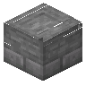
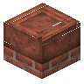
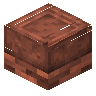

aruori6
整合包图鉴
简单
精确
#caupona:stoves
物品标签 · 5 个已收录成员
标签成员
(5)
夯土干砌石灶台
caupona:mud_kitchen_stove

石砖灶台
caupona:stone_brick_kitchen_stove

红砖灶台
caupona:brick_kitchen_stove
片石饰面混凝土灶台
caupona:opus_incertum_kitchen_stove

嵌砖混凝土灶台
caupona:opus_latericium_kitchen_stove
使用该标签的配方
无